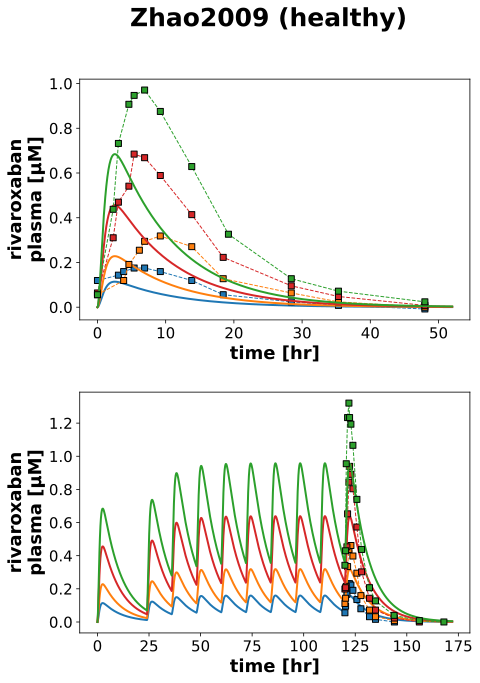

|  |
../../../../experiments/studies/zhao2009.py
from typing import Dict
from sbmlsim.data import DataSet, load_pkdb_dataframe
from sbmlsim.fit import FitMapping, FitData
from sbmlutils.console import console
from pkdb_models.models.rivaroxaban.experiments.base_experiment import (
RivaroxabanSimulationExperiment,
)
from pkdb_models.models.rivaroxaban.experiments.metadata import Tissue, Route, Dosing, ApplicationForm, Health, \
Fasting, RivaroxabanMappingMetaData, Coadministration
from sbmlsim.plot import Axis, Figure
from sbmlsim.simulation import Timecourse, TimecourseSim
from pkdb_models.models.rivaroxaban.helpers import run_experiments
class Zhao2009(RivaroxabanSimulationExperiment):
"""Simulation experiment of Zhao2009."""
# multiple doses in Chinese healthy subjects
doses = [5, 10, 20, 30]
colors = {
5: "tab:blue",
10: "tab:orange",
20: "tab:red",
30: "tab:green",
}
def datasets(self) -> Dict[str, DataSet]:
dsets = {}
fig_id = "Fig2C"
df = load_pkdb_dataframe(f"{self.sid}_{fig_id}", data_path=self.data_path)
for label, df_label in df.groupby("label"):
dset = DataSet.from_df(df_label, self.ureg)
dset.unit_conversion("mean", 1 / self.Mr.riv)
dsets[label] = dset
# console.print(dsets.keys())
return dsets
def simulations(self) -> Dict[str, TimecourseSim]:
Q_ = self.Q_
tcsims = {}
for dose in self.doses:
# single dose
tcsims[f"po_SD{dose}"] = TimecourseSim(
[Timecourse(
start=0,
end=52 * 60, # [min]
steps=1000,
changes={
**self.default_changes(),
"PODOSE_riv": Q_(dose, "mg"),
},
)]
)
# multiple dose
# day 1
tc0 = Timecourse(
start=0,
end=24 * 60, # [min]
steps=100,
changes={
**self.default_changes(),
"PODOSE_riv": Q_(dose, "mg"),
},
)
# day 2 - 5
tc1 = Timecourse(
start=0,
end=12 * 60, # [min]
steps=100,
changes={
"PODOSE_riv": Q_(dose, "mg"),
},
)
# day 6
tc2 = Timecourse(
start=0,
end=52 * 60, # [min]
steps=100,
changes={
"PODOSE_riv": Q_(dose, "mg"),
},
)
tcsims[f"po_MD{dose}"] = TimecourseSim(
[tc0] + [tc1 for _ in range(8)] + [tc2]
)
return tcsims
def fit_mappings(self) -> Dict[str, FitMapping]:
mappings = {}
for k, dosing in enumerate(["SD", "MD"]):
for dose in self.doses:
formulation = f"{dosing}{dose}"
mappings[f"fm_po_{formulation}"] = FitMapping(
self,
reference=FitData(
self,
dataset=f"rivaroxaban_{formulation}",
xid="time",
yid="mean",
yid_sd=None,
count="count",
),
observable=FitData(
self, task=f"task_po_{formulation}", xid="time", yid=f"[Cve_riv]",
),
metadata=RivaroxabanMappingMetaData(
tissue=Tissue.PLASMA,
route=Route.PO,
application_form=ApplicationForm.TABLET, #NOT REPORTED?
dosing=Dosing.SINGLE if "SD" in formulation else Dosing.MULTIPLE,
health=Health.HEALTHY,
fasting=Fasting.FASTED,
coadministration=Coadministration.NONE,
),
)
return mappings
def figures(self) -> Dict[str, Figure]:
fig = Figure(
experiment=self,
sid="Fig2",
num_rows=2,
name=f"{self.__class__.__name__} (healthy)",
)
plots = fig.create_plots(
xaxis=Axis(self.label_time, unit=self.unit_time),
yaxis=Axis(self.label_riv_plasma, unit=self.unit_riv),
legend=False
)
# single and multiple dose
for k, dosing in enumerate(["SD", "MD"]):
for dose in self.doses:
formulation = f"{dosing}{dose}"
plots[k].add_data(
task=f"task_po_{formulation}",
xid="time",
yid=f"[Cve_riv]",
label=formulation,
color=self.colors[dose],
)
plots[k].add_data(
dataset=f"rivaroxaban_{formulation}",
xid="time",
yid="mean",
yid_sd=None,
count="count",
label=formulation,
color=self.colors[dose],
)
return {
fig.sid: fig,
}
if __name__ == "__main__":
run_experiments(Zhao2009, output_dir=Zhao2009.__name__)
{kind=link}